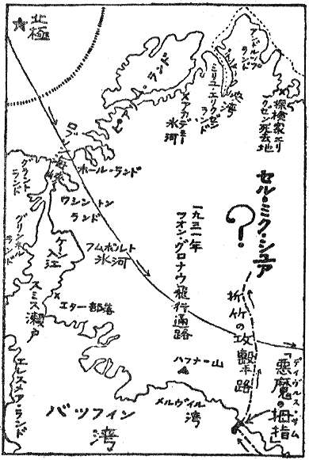

いよいよ本篇から、魔境記も大ものばかりになってくる。まず、その手初めが
“Ser-mik-suah”グリーンランド中部高原の北緯七十五度あたり、氷河と峻険と猛風雪と酷寒、
広茫数百の氷河を擁する未踏地中のそのまた奥。そこに、字義どおりの
冥路の国ありという、
“Ser-mik-suah”は極光下の神秘だ。では一体、その「
冥路の国」とはどういうところか。
まず、誰しも思うのは伝説の地だということ。グリーンランドの内部は、八千フィートないし一万フィートの高さのわたり、大高原をなしている。そして、それを覆う千古の氷雪と、大氷河の
囲繞。とうてい五百マイルの旅をして核心を衝くなどということは、
生身の人間のやれることではない。だから、そこに冥路の国がある、死んだ魂があつまる死霊の国がある――とエスキモー土人が盲信を
抱くようになる。
と、これがマアいちばん妥当なところで……たぶん皆さんもそうお考えであろうと思われる。また、「
冥路の国」について多少の知識のある方は、一歩進んだものとして次のようなことも言うだろう。
馬来の
狂狼症をジャングルの妖とすれば、「
冥路の国」の招きは氷の神秘であろう。それに打たれた土人は狂気のようになり、家族をわすれおのが生命をも
顧みず、日ごろ怖れている氷嶺の奥ふかくへと、
橇をまっしぐらに走らせてゆく。まばゆい、
曼珠沙華のような
極光の倒影。吹雪、青の光をふきだす
千仭の
氷罅。――いたるところに口を開く氷の墓の遥かへと、そのエスキモーは生きながら
呑まれてゆく。
と、いうように氷の神秘と解釈する。それだけでも、「
冥路の国」は興味
津々たるものなのに、一度折竹の口開かんか、そういう驚異さえも吹けば飛ぶ塵のように感じられる。それほど……とは何であろう

曰く、想像もおよばず筆舌に尽せず……ここが真の魔境中の魔境たる
所以を、これからお
馴染ふかい折竹の声で
喋らせよう。
「なるほど、君も『
冥路の国』について、ちっとは知っているね。だが一つだけ、君がいま言ったなかに間違いがあるよ。というのは、『
冥路の国』の招きでエスキモーが
橇を走らせる。まるで、とっ
憑かれたようになって、夢中でゆく。というなかに、一つだけある」
「へええ、というと何だね」
「つまり、生きた人間ではないからだ。その、橇をはしらせるエスキモーは、死んだやつなんだ」
「そうだろうよ」と、私はひとり合点をして、
頷いた。ついに、折竹も語るに落ちたか、魔境中の魔境などと偉そうなことをいうが、やはり結句は、死霊あつまるというエスキモーの迷信
譚。よしよし日ごろやっつけられる
腹癒せに今日こそ
虐めてやれと、私は意地のわるい考えをした。
「なるほど、死んだ人間が橇をはしらせる。じゃそれは、魂なんてものじゃない、本物の死体なんだね」
と参ったかとばかりに言うと、意外なことに、
「そうだ」と折竹が平然というのである。
「死体が橇を
駆る。ふわふわと魂がはしらせる幻の橇なんて、そりゃ君みたいな馬鹿文士の書くことだ。あくまで、冷たくなったエスキモー人の死体。どうだ」
私は、しばしは
唖然たる思い。すると、折竹がくすくすッと笑いながら、
懐から洋書のようなものを取りだした。みると「
グリーンランズの氷河界」という標題。一八七〇年にグリーンランドの東北岸、マリー・ファルデマー岬に上陸したドイツ隊の記録だ。それを、折竹がパラパラっとめくり、太い腕とともにぐいと突きだしたページには、
翌五月十六日、依然天候は険悪、吹雪はますます激しい。
天幕内の温度零下五十二度。嚢内からはく
呼吸は毛皮に凍結し、
天幕のなかは一尺ばかりの雪山だ。すると突然、エスキモーの
“E-Tooka-Shoo”が死んだような状態になった。脈は細く、ほとんど聴きとれない。体温は三十二度。まさに死温。

地図＝グリーンランドとセル・ミク・シュア
「死んだよ」と、私がもう一人のエスキモーの
“AL-Ning-Wa”にふり向いて、
「だが、どうして急にこんな状態になったか、わからん。さっきまで、ピンシャンしてた奴が、急にこうなっちまった」
と、その時だ。いきなり、死んだはずのエ・ツーカ・シューが、むっくと起きあがった。蘇えったか、と、支えようとする私をアル・ニン・ワは押しとどめ、
「死んでいるだよ。動いているだが、エ・ツーカ・シューは死んでいるだ」という。私が、なにを言うかと
屹ッとみる
目差しを、その老エスキモーは受けつけぬように静かに、
「論より証拠というだて、ちょっと手を握ってみなせえ、脈はあるだかね。おいら、生きてる人間みてえに、暖かになったかね」
なるほど
先刻と、彼のいうとおり少しも変っていない。死体がうごく――と、
呆気にとられた私にアル・ニン・ワは言い続ける。
「そっとして……。旦那は、何もしねえほうが、いいだよ。エ・ツーカ・シューは、これから『
冥路の国』へ召されるところだから。死骸になってから行かされるなんて、おいらの種族はなんて手間が掛るだべえ」
とみる間に、エ・ツーカ・シューがのっしのっしと歩きはじめた。まるで、ゼンマイ人形のような機械的な足取り。やがて
天幕をまくったとき吹きこむ粉雪のために、彼の姿は瞬間にみえなくなった。それなりだ。橇犬の声がやがて外でした。岩がちぎってくるような吹雪の合間合間に、しだいに遠ざかってゆく鈴の音、犬の声。
行ってしまった。極北の神秘「
冥路の国」は実在せり！ エ・ツーカ・シューは死体のまま橇を駆り、
晦冥の吹雪をつき氷の
涯へと呑まれたのだ。
なんたる怪か――と、あきれる私の耳元へ折竹の声。それが、また意味はちがうが
打ん
殴るような驚きを
［＃「驚きを」は底本では「響きを」］……。
「どうだい、僕が魔境中の魔境といったのも、ハッタリじゃあるまい。それに、この探検にはひじょうな意義がある。じつは、国際法の
先占問題にも触れている」
と、私に
固唾をのましたその「先占」とは。例をわが国にとれば、南極問題あり。かの大和雪原領有を主張する、白瀬中尉の熱血。また近くは、フランスと争った新南群島の先占。いずれも事新しいだけに賢明な皆さんのまえで、この言葉の説明の必要はあるまいと思われる。つまりこれは、無主の地へいちばん先に踏み入ったものが、その本国政府に言って先占宣言をさせる。今後この地は自国の領土である、異議あるものは申し出い――というのが「先占」。
では今、国際紛争を
仄めかすような先占問題がからむという、極北のその地とは一体どこのことだろう
私は、深くも聴かずひとり合点をして、
「なるほど、それが『
冥路の国』探検の副産物というわけだね。じゃ、どこだ？ その、新発見の北極の島ってえやつは」と言うと、折竹はいけぞんざいに手をふって、違う、と嘲けるように言う。
「島じゃない。その無主の地というのは、グリーンランドの
内部だ」
驚いた。現実を無視するにもこれほど痛快なものに、私はまだ出会ったことがない。
全島、ヨーク岬をのぞくほかデンマーク領のグリーンランド――。よしんば
内部が、「
冥路の国」をふくむ
広茫の未踏地とはいえ、沿岸を占めれば自然奥地も領地となる――国際法には奥地主義の法則がある。それでは、先占
云々の余地は完全にないではないか。無主の地はたとえ一坪たりと、いま北極圏の大島グリーンランドにはないのだ。それにもかかわらず……。
と、いうところが「死体駆る
橇」とともに、「
冥路の国」探検の大眼目になっている。しかしこれは、
暫く興味上保留することにして、では、そこを先占しようとしたのは、いずれの国であろう。訊くと、折竹は紅潮さえもうかべ、
「どこって
それが他の国ならいう必要のないことだ。日本政府が、もしも僕の仕事を追認してくれてだね、『
冥路の国』の先占宣言をしてくれたら……」
ここで、もはや言うべき言葉もなくなった。ドイツ人が夢想する
新極北島を
徒手空拳で実現しようとした折竹の快挙談。
氷冥郷をあばく大探検にともなう、国際陰謀と美しい情火のもつれを……。さて、彼に代ってながながと記すことにしよう。
全米に、かなり名の聴えたウィンジャマー
曲馬団が、いまニューヨーク郊外のベルローズで興行している。サーカスの朝はただ
料理天幕が騒がしいだけ……。芸人も起きてこず野獣の声もない、ひっそり閑とした朝まだきの一刻がある。そのころ、
水槽をそなえた海獣の
檻のまえで、なにやら
馴育師から説明を聴いているのが……、というよりも
甚だしい海獣の臭気に、鼻を覆うていたのが折竹孫七。
「これが、今度入りました新荷でがして」と、
海豹使いのヒューリングがしきりと喋っている。なかには、海豹、
海驢、
緑海豹など十匹ほどのものが、
鰭で打ちあいウオーウオーと
咆えながら、狭いなかを
捏ねかえすような壮観だ。
「じつは、なんです。これは、さるところから
纏めて手に入れまして……、さて、訓練にかかったところ、大変なやつが一匹いる。どうも見りゃ
海豹ではない。といって、
膃肭獣でもない、
海驢でもない。海馬でもなし、
海象でもない。さだめしこれは、新種奇獣だろうてえんで、いちばん折竹の旦那にご鑑定をねがったら、きっとあの不思議な野郎の正体が分るだろう……」
というところへ「これはご苦労さんで」と、親方のウィンジャマーが入ってきた。ウィンジャマーは、きょう折竹の連れである自然科学博物館の、ケプナラ君とは熟知の仲である。ぺこぺこ頭をさげて折竹に礼をいってから、おいキャプテンと、ヒューリングに言った。
「こりゃね、一つお前さんに仕方
噺をして貰おうよ。
海獣の訓練の順序をお目にかけてからでないと、どんなにあの野郎が手端に負えねえやつかということが、旦那がたに呑み込めねえかも知れねえから……」
と、ヒューリングがまず西洋
鎧のような、
鉄葉ズボンという
足部保護具をつける。これを着けないと、いつ未訓練のやつに、がりがりっとやられるかも知れない。
檻の戸をあけてそっと
内部にはいると、見かけは鈍重そうな氷原の豹どもも、たちまち牙を
露きだし、野獣の本性をあらわしてくる。ヒューリングは、
鉄葉ズボンのうえをガリガリやられながら、鉄棒につかまって外側へ声をなげる。
「最初は、生魚食いのこいつらに、死魚を食わせる。ぴんぴん糸で引っぱって躍らせていると、うっかり生きてると間違えて、ガブリとやる。そうして、
餌についたら、もう占めたもんで……。まもなく、
飾り台のうえに、ちょこなんと乗る。
撞球棒のうえへ玉をのせたのを、鼻であしらいあしらい
梯子をのぼってゆく。それから、梯子の頂上でサッと撞球棒を投げ、見事落ちてくる玉を
鼻面で受けとめる。
――というようになれば、いっぱしの太夫。手前も、給金があがるという嬉しい勘定になる。ところがです、あの
“Gori-Nep”の野郎ときたら手端にも負えねえ」
「
“Gori-Nep”って？」と折竹がちょっと口を
挟んだ。
「つまり、野郎は
演芸用海豹仲間のゴリラですからね。マア、この
鉄葉ズボンの穴をみてくださいよ。たいていの
海獣なら二、三度で
噛み止みますが、あいつの執念ときたらそりゃ恐ろしいもんで……。ええ、その大将はすぐ参ります。じつは、野郎だけが独房生活で」
その、通称
“Gori-Nep”という得体のしれぬ海獣を、まもなく折竹はしげしげとながめはじめた。身長は、やや
海豹くらいだが体毛が少なく、まず目につくのがおそろしく大きな牙。おまけに、人をみる目も絶対なじまぬ野性。ついに折竹にも見当つかずと見えたところへ「あれかな」と、連れのケプナラを
莞爾となって、ふり向いた。
「ケプナラ君、君はエスキモー土人がいう、
“A-Pellah”を知っているかね」
「アー・ペラー
いっこうに知らんが、なんだね」
「
海豹と
海象の
混血児だ。学名を
“Orca Lupinum”といって、じつに
稀に出る。その狂暴さ加減は学名の訳語のとおり、まさに『鯨狼』という名がぴたりと来るようなやつ。孤独で、南下すれば
膃肭獣群をあらす。滅多にでないから、標本もない。マア、僕らは、きょう千載に一遇の機会で、お目にかかれたというわけだ」
「ううむ、そんな珍物かね」と、温厚学究君子のケプナラ君は感じ入るばかり。果して、この奇獣は
唯者ではなかった。やがて、折竹を導いて「
冥路の国」へと引きよせてゆく、運命の無言の使者だったのだ。
咆えもせず、じっと瞳を
据えて人間を見わたしている、
狡智、残忍というか
慄っとなるような光。これぞ、極洋の狼、孤独の海狼と――なんだか
睨みかえしたくなる厭アな感じが、ふとこの数日来折竹に
絡わりついている、ある一つの異様な出来事を思いださせたのである。それは、両三度を通じておなじような意味の、次のような手紙が舞いこんできたのだ。
敢えて小生は、世界的探検家なる折竹氏に言う。この地上にもし、まだ誰も知らず一人も踏まぬ国ありとすれば、その所在を、ご貴殿にはお買い取りになりたき意志なきや。小生は、それほどのものを売らねばならぬほど、
目下困窮を極めおり候。
明日、午後三時より三時半までのあいだ、
東二十四番街のリクリェーション
埠頭の出際、「
老鴉」なる酒場にてお待ち申しおり候、目印しは、ジルベーのジンと書いてある
貼紙の下。
Ｋ・Ｍ生
未知の国
売物――じつに空前絶後ともいう奇怪なことである。まして、国というからには単純な未踏地ではあるまいが、まさか、そんなものがこの地上にあろうとは思われない。折竹はなんだか
揶揄われるような気がして、ついに、二度三度と手紙がきても行かずにいた。
と、つぎに昨日のことだった。ふいに、男女二人の訪客があって、その名刺をみたときオヤッと思ったほど、じつにそれが意想外の人物だったのだ。
無疵のルチアノ――いまタマニーに風を切るニューヨーク一の大親分。
牝鶏フロー、彼の情婦で
魔窟組合の女王、千人の妓と二百の家でもって、年額千二百万ドルをあげるという、大変な女だ。そういう、暗黒街に鳴る
鏘々たる連中が、いかなる用件があってか丁重きわまる物腰で、折竹の七十五番街の宿へやってきた。
世界的探検家対ギャングスター・ナンバー
一。まずこれは、一風雲必ずやなくてはなるまい。
「ご免なすって」と人相は悪いがりゅっとした服装の
伊太公、フローは、まだ若くガルボ的な顔だち。しかし、
駆黴剤の
浸染はかくし
了せぬ素姓をいう……、いまこの暗黒街を
統べる大
顔役二人が、折竹になに事を切りだすのだろう。
「じつは、高名な先生にお願いの筋がござんして。と、申しますのは余の儀でもござんせん。ここで、分りのいい先生にぐいと呑みこんで頂いて……」
「なにをだ」
「すべて、どこへ行くとか何をするとか――その辺のところは
一切お訊きにならず、ただ手前の指図どおり親船に乗った気で、ちかく
“Salem”をでる『フラム号』という船にのって頂く」
「おいおい、俺をどこかの殴りこみに連れてゆくのか」
「マア、お聴きなすって」と、ルチアノはかるく抑え、
「で、その船は北へ北へとゆく。すると、そのどこかの氷のなかにだね。ぜひ先生のお力を拝借せにゃならねえものが、おいでを、じっと待ってるんですよ」
「では、そこは何処なんだね。また、僕の力を借りるとは、何をすることなんだ？」
「どうか、それだけはお訊きにならねえで。ただ、申しあげておくのは、けっして
邪しいことじゃない。法律に触れるようなことでは絶対にないという……その点だけはご安心願いたいもんで」
折竹は、ただただ呆れたように
瞬くだけ。ギャングども、大変なことを言ってきやがった。俺の力を、借りたいというからには探検であろうが、いま、年収八千万ドルといわれるルチアノの仕事なら、あるいはそれが途方もないものかも知れぬ。どこだろう、北へ北へといって氷のなかに出る
はてなと、思いめぐらすが、見当もつかない。ただ、匂ってくるのは黒暗々たる秘密のにおい。
「ねえ、先生、ご承知くださいましなね」
と、フローが間に耐えられないように、
「私たちだって、
偶にゃ真面目な稼ぎの一つくらいはしますからね。先生にだって一生楽に暮せるくらいの、お礼は差しあげるつもりなんですよ。ねえ、先生ったら、うんと言って……」と、それでも黙っている折竹に
焦れたのか、それともフローの本性か、じりじりっと
癇癪筋。
「じゃ、私たちの仕事なんて、お気に召さないんだね」
「マア、言やね」と折竹はハッキリ言った。すると、扉のそとでコトリコトリと足音がする。いるな、ルチアノの護衛、
代理殺人者のジップ
［＃「ジップ」は桃源社版では「ジッブ」］か
と思ったが顔色も変えない、折竹にはルチアノも弱ったらしい。
「ご免なすって。牝の蹴合鶏みたいな
阿魔なんで、とんだことを言いやして。とにかく、この問題はお考え願っときましょう。いずれは、うんと言って頂かなきゃルチアノの顔が立たねえが、そんな
強面は百万だら並べたところで、先生にゃ
効目もありますまい。なア、俺らが来てもビクともなさらねえなんて……、フロー、お立派な方だなア」
折竹は、その間ものんびりと紫煙にまかれている。
代理殺人者の銃口を扉のそとに控えていても、
暗黒街の
閻魔夫婦を目のまえに見ていても、不義不正や圧迫には一分の揺ぎもしない彼には、骨というものがある。静かだ、ウエスト・エンド
通りの雑踏が蜂のうなりのように聴えてくる都心
紐育下町のなかにも、こうした閑寂地がある。がいよいよルチアノも手がつけられなくなって、
「マア、これをご縁にちょいちょい伺ううちにゃ、先生だって情にからむだろう。なにも、
殴り込みばかりが能じゃねえ。誠心誠意という、こんな手もありまさア」
「おいおい、ギャングの情にからまれるのか」
「そう仰言られちゃ、身も
蓋もねえが」
とルチアノは苦笑しながら立ちあがる。が、なんと思ったか、ちょっと目を据えて、
「時に、あっしらしくもねえ妙なことを伺いやすが……最近、先生んところへ
匿名の手紙が来やしませんか」
「来たよ。しかし、地獄耳というか、よく知ってるね」
「ご注意しますが、絶対あんなものには係わらねえほうが、いい。ずいぶんコマゴマしたことで、無駄な殺生をしたり、ケチな
強請をするために大変な筋書を書く――というような奴が、ゴロゴロしていますから。そこへゆくと、あっしらのは
実業で……」
と、これがルチアノの帰りしなの
台辞だった。
二人が帰ると、ギャングという初対面の怪物よりも、なにを彼らが企てつつあるのか、陰の陰の秘密のほうに心が
惹かれてゆく。
極洋――そこにルチアノ一味がなにを目指している
いわば変態ではあるが一財閥ともいえる、ルチアノ一派の実力で何をしようとするか
またそれがあの手紙の主とどんな関係にあるのだろう
と思うと、イースト・サイドの貧乏窟でせっかくの秘密をいだきながら、ギャングの圧迫のためうち
顫えている、一人の可憐な乙女が想像されてくる。
未知の国売物――それと、ルチアノ一味のギャングとのあいだには、見えない糸があるのではないか。
行ってみよう、彼はやっとその気になった。が「
老鴉」というその酒場へいってみると、すでに日も過ぎたが、それらしい人影もない。見えない秘密、いや、逸してしまった秘密……とやきもきとした一夜が過ぎると、翌朝はケプナラとともにウィンジャマー
曲馬団。いま、彼はあれこれと思いながら、奇獣「
鯨狼」のまえに立っているのだ。すると、ケプナラがウィンジャマー親方に、
「だが、よくこの
鯨狼は餌につきましたね」
「そこです。最初は、誰がやっても見向きもせんでした。ところが、
相縁奇縁というかたった一人だけ、この先生に餌を食わせる女がいる。呼びましょう。オイ、
牝河馬のマダムに、ここへ来るようにって」
と、やがて現われたのが意外や日本人。
“Onobu-san, the Fatima”――すなわち大女おのぶサンという、重錘揚げの芸人だ。身長五尺九寸、体重三十五貫。大一番の
丸髷に結って
肉襦袢姿、それが三百ポンドもある大重錘をさしあげる、
大和撫子ならぬ大和
鬼蓮だ。
「おやおや、
故国の人だというから、もうちっと好い男だと思ったら……。えっ、あんたがあの、探検屋折竹
」
とこれが、折竹にひき合わされたおのぶサンの第一声。サーカスにいるだけにズケズケと言う。悪口、
諧謔、
駄洒落連発のおのぶサンは一目でわかる好人物らしい大年増。十歳で、故郷の広島をでてから三十六まで、足かけ二十六、七年をサーカス暮し。
このウィンジャマー
曲馬団の幌馬車時代から、いま、
野獣檻だけでも
無蓋貨車に二十台という、大サーカスになるまで、浮沈を共にした、情にもろい気さくな性格は、いまや名実ともにこの一座の
大姐御。といって、愛嬌はあるが、寸分も美人ではない。まあ、十人並というよりも、
醜女のほうに分があろう。
「ほら、私だというとこんな具合で、化物
海豹めが
温和しくなっちまう」と、餌桶いっぱいの魚をポンポンくれているおのぶサンと、
鯨狼をひき比べてみているうちに、折竹がぷうっと失笑をした。それを見て、
「この人、気がついたね」
と、おのぶサンがガラガラッと笑うのだ。
「なんぼ、私とこの大将と恰好が似ているからって、別に、親類のオバサンが来たなんてんで、
懐いたんじゃないよ。つまり、相縁奇縁ってやつだろうね。私もこいつも、知らぬ他国を
流浪の身の上だから、言葉は通じなくても以心伝心てやつ」
「おい姐さん、以心伝心で口説いちゃいけねえよ」
と、白粉っ気はないが、道化らしい顔がのぞく。
馬を洗う音や、曲奏の
大喇叭［＃「大喇叭」は底本では「大喇叺」］の音。
楡の新芽の鮮緑がパッと天幕に照りはえ、四月の春の陽がようやく高くなろうとするころ、サーカスのその日の朝が目醒める。しかしまだ、
鯨狼をここへ売ったのが何者かということが、最後の問題として残っているのだ。それに、親方が次のように答える。
「なんでもね、二っちも三っちもいかなくなった捕鯨船の後始末とかで、こいつを売ったやつの名は、クルト・ミュンツァ、です。
住所はイースト十四番街の高架線の下で」
この、鯨狼の
［＃「鯨狼の」は底本では「鯨の」］出所については折竹よりも、むしろ、このほうの専門家のケプナラ君に興味多いことだ。ところが、どうしたことかそれを聴くと、ちょっと、折竹が放心の態になった。ただ、
“K rt Mnzer”
rt Mnzer”と呟いている訳は
あの、未知国の所在を売るという匿名の手紙の主の、Ｋ・Ｍというのがクルト・ミュンツァの頭文字。
事によったら、これが導きとなってあの手紙のわけも、また、それに関連しているらしいルチアノ一派の策動の意味も――すべてが明白になるのではないか。してみると、この奇獣
鯨狼も全然無関係ではない。いや、無関係どころか極地に春がきて、ながい闇が破れるようにすべてを分らせる――と、折竹はそんなように考えてきた。
金鉱、ダイヤモンド鉱それとも石油か
いま、ルチアノ一味が全能力をあげて、それに
打衝ろうという意気が
仄みえるだけに、……秘密の、深い深い底をのぞき知ろうとする、彼はいま完全に好奇心の俘虜。
「折竹さん、
海獣とばかり
交際ってて、あたしを忘れちゃ駄目だよ。一度、ぜひ伺わせて貰うからね」
「来給えな」と言ったのも、上の空。おのぶの言葉も瞬後に忘れてしまったほど、心は、クルト・ミュンツァが住む
高架線の下へ。
その後、彼とケプナラがイースト・サイドへ出掛けていった。
そこは、二十七か国語が話されるという、人種の
坩堝。極貧、小犯罪、失業者の巣。いかに、救世軍声を
嗄らせどイースト・リヴァの澄まぬかぎり、ここの
どん詰りは救われそうもないのだ。
「ここが、二〇九番地だから、この奥だろう」
と、皮屋と
剃刀屋のあいだの階段をのぼり、突き当りのボロ
蜂窩へはいってゆく。
廊下は、壁に
漆喰が落ちて割板だけの隙から、糸のような灯が廊下にこぼれている。年中、高架線の轟音と栄養不足で痛められている、
裸足の子供たちがガヤつく左右の室々。やっと、さぐり当てたクルト・ミュンツァの部屋を、折竹がかるく
叩きをした。
「入れ。誰だ、マッデンかい」
あけると、意外な男二人にオヤッと目をみはる。どこか悪いらしく寝台にねているミュンツァは、三十
恰好の上品な面立ちの男だ。折竹が、来意を告げると踊りあがるような悦び。あのＫ・Ｍとは、やはりこのミュンツァ。
「ああ、来てくだすったですね。いろいろ、ご都合もあろうし、駈け違ったことと思っていましたが」
と、やがてあの不思議な手紙を折竹に出したについての、極洋に横たわるという知られない国の話をしはじめた。
「折竹さん、あなたは五年ほどまえ北極探検用として、
潜水客船というのを考案したミュンツァ博士をご存知ですか」
「知っています。じゃ、おなじミュンツァとなると、あなたは？」
「あの、アドルフ・ミュンツァは僕の父です」とクルトは
［＃「とクルトは」は底本では「クルトは」］感慨ぶかげに言うのだ。
「父は、ご存知のとおりの造船工学家でしたが、極地の大氷原を
氷甲板として、そこに新ドイツ領をつくろうという、夢想に燃えていたのです。新極北島――と、父は氷原上の都市をこう呼んでいましたよ。ところが、まもなく一隻を自費でつくりあげ、一九三三年には極洋へむかいました。僕は、体質上潜行に適しないので、捕鯨船の古物である一
帆船にのって『ネモ号』というその潜船に
蹤いていったのです。すると、運の悪いことには半月あまりの暴風雨。無電はこわれ散々な目に逢ったのち、『ネモ号』を見失って漂流一月あまり。やっとグリーンランド東北岸の
“Koldewey”島の
峡湾に流れついて、通りがかりの船を待っていました」
「その間、ネモ号は」と、ケプナラ君がロイド眼鏡をひからせる。
「なにしろ、無電が壊れているんで、サッパリ消息が分りません。すると、そこへ運よく一隻の捕鯨船が通りかかって、僕は無電の修理材料をもらいました。修理が成った、と、それから三日ばかり経った夜、偶然、ネモ号の通信をとらえたのです。ご想像ください。まるで、蒼白いランプのような真夜中の太陽のしたで父の通信と分ったときの、私の悦び。しかしでした」
「では、その通信にはなんとありましたね」
「奇怪なことです。僕は、父が気違いになったとしか思えなかった。どうです、たとえば貴方がたがこういう無電をうけたとしたら……」と、クルトの目が、じっとすわって、当時の回想が胸迫ったような面持。それは、たぶんお読みになる皆さんもアッと言うだろうほどの、つぎの奇怪極まるものであった。
――
いま、われらは「冥路の国」に近し。ついにグリーンランド内地に新領土を発見す。
およそ、世に分らないということにも、これほどのものはあるまい。冒頭でもいったように国際法の規定では、沿岸を占めれば奥地も領土となる。いま、グリーンランドで新領土の余地などというものは、誰がみても皆目ないはずなのに……。では、そのミュンツァ博士の通信は、
戯れか狂気沙汰か
「僕は、その意味がいまだに分りません。もっと、上等な頭で考えたら分るのかもしれないが、僕にはどうも投げ出すより仕様がない。で、その無電はそれで切れました。あとは、待てど暮せど、なんの音沙汰もない。仕方なく、僕は父をあきらめて、その
峡湾を出ていったのです」
「なるほど、お父さんのミュンツァ博士は、死を確認されている」
と、折竹が沈んだ顔をして、呟いた。
しかしその時、彼の胸をサッとかすめた一抹の疑問。ことによったら、博士は「
冥路の国」の不思議な手に、狂人となっていたのではないか。死体が、橇を駆るように招かれてゆく途中、あの奇怪な無電をうったのではないか
しかし、その考えはその場かぎり消え、彼は、別のことを訊きだした。
「時に、クルト君は僕以外のものに、この話をしたことはないかね」
「あります、ただ一人だけです。それは、一昨年父をさがしに、グリーンランドへ行ったのです。その時、あの奇獣の
鯨狼をつかまえた。だが、その探検も結局空しくおわり、僕は全財産を
摺り結核にまでなって、とうとうこのイースト・サイドへ落ちこんだ。では、なぜ本国へ行かぬかと
仰言るのですね
それは、あのユダヤ人排斥でとんだ飛ばっちりをうけたからです。
当時、本国は
鼎の湧くような騒ぎ。密告が密告につぎユダヤ人ならぬ僕までが、本国に帰れないことになりました。そうした、困窮のなかを父と面識のある、タマニー区検事長のロングウェル氏に救われました。僕が、こんな汚ないところでも死なないでいるのは、ロングウェルさんのお蔭といっても、いい。むろん、このことは
一仍始終話したのです」
そのロングウェル氏は、ニューヨーク暗黒街にとれば仇敵のような人物。
清廉、誘惑をしりぞけ圧迫を物ともせず、ギャング
掃蕩のためには身命さえも賭そうという、次期州知事の候補者の一人だ。そうなると、ルチアノ一味とは反対の立場にある、ロングウェル氏が知るというのではなんの意味もなさない。なぜ、ルチアノ一派がそれを知っているらしいのか、折竹がそのことを訊いた。
「クルト君、君はルチアノの連中と関りあったことはないかね」
「ルチアノ
」とクルトは驚いたような顔をして、
「僕が、なんで
汚らわしいあの連中を、知るもんですか。驚いた。それは、どういう訳ですね」
ルチアノと、知らない！ ますます、折竹は分らなくなっていくばかり。まったく、これはクルトが嘘を言っているか……、それとも、隠し事でもしてない以上、
腑に落ちないことだ。と、彼はいきなり語気をつよめ、
「君はまだ、僕に隠していることがあるね。もし、金にしようというのなら、幾らでも出させるが……」
「えっ、何のこってす
」と、クルトはポカンとなる。
それに、嘘の分子が微塵もないということが、折竹にはハッキリと分るのだが……。しかしそれでは、ルチアノ一派がどうして知っているのか？ まず彼らの大好物である富源のようなものでもない限り、またそれを、あの一味が知る機会がないかぎり……と、なおも折竹は執拗に畳みかけてゆく。
「では君が、僕に未知の国の所在を、売ろうと言ったわけは？ あのお父さんの怪無電以外に、もっとこの問題を現実付けるものが、なけりゃならんね」
「それは」とクルトがぐびっと唾をのむ。ついに、ここに最終のものが現われるか。「それは、あの
鯨狼がどこにいたか。私が、あの奇獣をどこで捕まえたか」
「なに、鯨狼を捕獲した場所
」
「そうです。父のあの無電を現実付けるものが、鯨狼の捕獲位置にあるのです。それが、北緯七十四度八分。西経……」
と、言いかけたとき、怖ろしいことが起った。とつぜん、窓
硝子がパンと割れたと思うと、クルトの
顳
にポツリと紅いものが……。彼が、ポカンと馬鹿のように口を空けていたのも瞬時、たちまち、崩れるように床へ転げ落ちてしまったのだ。
ルチアノ一味の手が肝腎なところの瀬戸際で、クルトの口を塞いでしまったのである。西経……、ああそれが分れば。
ルチアノの魔手――それはいわずと分ることである。まったく、訳も分らぬことばかりが引き継いでおこる事件のなかで、なにより骨子となるミュンツァ博士の怪無電が……やっと、ヴェールを
除ろうとすればもうこの始末。可哀想にと、折竹も暗然と死骸をみている。
ルチアノめ「
冥路の国」になにを狙っている
何を何をと、ただ盲目さぐりの
焦だたしいその気持は、くそっ、ゴージャンノットの結び目に逢ったかと、折竹も
嗟嘆の声をあげるばかり。という、その錯綜の謎は並べてみてさえも、皆さん、頭が痛くなるではないか。
一、クルトの父ミュンツァ博士が、グリーンランドの内地に新ドイツ領を発見したという。しかしそれは、じつにどうにも考えられぬこと……、でまずまず「冥路の国」の
魅魍のため狂人になったとしか思えぬ。
二、ところがそれに、
倅のクルトは
鯨狼の捕獲位置から、一脈の真実性があるという。まず、その地の緯度をいい次いで経度をいおうとしたとき、飛びきたった銃弾に
斃された。それは、疑う余地もないルチアノ一味の仕業。
三、では、ルチアノ一味はどこからその情報を手に入れたか。クルトは、
清廉頑検事のロングウェル氏に話したのみと言うが、そのロングウェル氏はルチアノ一派の対敵――その辺の消息が、皆目分っていない。また、その地へルチアノ一味が食指を動かしているというについては、なにか驚くべき富源のようなものがなければならない。しかしもう、その事についても怪無電の真相も、すべてはクルトが墓場へ持っていってしまっている。
と、踏み
彷徨うような当て途もない気持のなかで、なんだか折竹は魔境の呼び声をうけてくる。謎を解く、それもクルトへの弔い合戦か。と、腰を抜かしたようなケプナラを促がしながら、やっと彼は死人のそばから腰をあげたのだ。
その数日後、彼はロングウェル氏に逢った。しかし、加害者の見当についても直接証拠のないかぎり、ここの、州刑法ではどうにもならない。ただ、クルトの死を無駄にさせたくない――この点では完全な一致をみたのだ。
ルチアノ一味を、向うにまわして「
冥路の国」を踏破する。怪無電の謎を解き魔境征服という以外にも、不義の徒に対する烈々たる
敵愾心。まず、彼らの策動を空に終らせることが、この際クルトへのなによりの
手向けだろう。と、いよいよ「冥路の国」探検ということになった。
がその間、彼はおのぶサンの来訪を頻繁にうけていた。
「ちょいと、あたし……また来たわよ」といった具合で、まい日のようにやって来る。折竹も、三度に一度はうるさそうな顔をするが、こういう時も、
「お邪魔はしないわよ。あたしに
関わず、お仕事をやって」と言う。そして何時までも、折竹の向う側にかけていて、雑誌などを見ながらもちょいちょいと彼をみる、その目付きは
唯事ではない。折竹も、このごろでは
慄っとなっている。
また来たわよ、ご迷惑ねえ――と、言われるときのあの気持といったら、悪女、
醜女も典型的なおのぶサン。三十六貫の深情かと思うと、胃のなかのものがゲエッと出てくるような感じ。
それに、ここになお一層悪いことは、今度おのぶサンも探検隊について「冥路の国」へゆくということになっている。それは、
鯨狼の給仕者という役。ではなぜ、鯨狼が探検に必要なのだろう
というのは、棲息地の記憶だ。これは、あらゆる海獣を通じての顕著な習性で、どこで鯨狼が捕えられたかということを、観察しつつ知ろうというのだ。
してみると、おのぶサンとは当分離れられぬわけ。それを思うと、ゲンナリしてしまう。
だが、折竹は神様ではない。もし神様ならばこう頻繁におのぶサンがくる
理由を覚らなければならない。なにか、おのぶサンには惚れた腫れた以外に、折竹に言いたいことがあるらしい。で、これは、ニューヨークを去る出発の前夜のこと。
その晩、昨日は来ないからやって来るなと思っていると、案の定、扉を叩く音がする。彼は、それを聞くとぞくっとなって来て、寝室に入りそっと息を凝らしていた。すると、
「折竹さん、いないんですの」と声がする。帰るだろう、黙っていりゃ行ってしまうだろう――と、思うがなかなか去る気配がない。そのうち、扉のしたからスウッと白いものが……。封筒らしい。さては、奴め打ち開ける気持だな……と、思ったとき向うの気が変ったらしく、今度は、その封筒がスルスルっと引っ込められてゆく。
それに、折竹の全運命が掛っていようとは、神ならぬ身の知るよしもなかったのだ。
探検隊は、古くからある捕鯨港のサレムで勢揃いをし、五月十九日の朝乗船「
発見」号には、
前檣たかく
出航旗がひるがえる。いよいよ、極北の神秘「冥路の国」へ。
ニュー・ファウンドランドを過ぎラブラドルール沖にかかると、もう水の色もちがってくる。それまでの藍色がだんだんに
褪せ、一日増しに伸びてゆく昼の長さとは正反対に、温度はじりじりと下ってゆく。すると、グリーンランドの西海岸をみるデヴィス海峡にかかった時、「
発見」号の全員がすくみ上るようなことが起った。
水平線が、とつぜんムクムクと起伏をはじめたかと思うと、みるみる、無数の流氷が「発見」号をおそってくる。船は、あちこちに転針してやっと
遁れたが、じつに前門の虎去れば後門の狼のたとえか……極鯨吹きあげる潮柱のむこうに、ポツリと帆影のようなものを認めたのだ。まもなく、
水夫長が案じ顔にやってきて、
「どうもね、あの
横帆船にゃ見覚えがあるんですがね」
「とは、どういう事だね」
「あっしゃ、あれがルチアノ一味の『フラム号』じゃねえかと思います。全部、新品の帆なんてえ船は、たんとねえんだから……」
そこで、補助機関が焚かれ、船脚が加わった。全帆、はり裂けんばかりに
帆桁を鳴らし、躍りあがる潮煙は迷濛な
海霧ばかり。そうして、二、三海里近付いたとき双眼鏡をはずした水夫長が、
「やっぱり」と、言葉すくなに折竹をみる……その顔には言外の恐怖があった。
まるで、送り狼のような「フラム号」の出現。それに、ルチアノやフローが乗っているかどうかは知らないが……とにかく、この二探検船の前途になに事かが起るということは、もうここで
贅言を費やすまでもないだろう。
自然への反抗とともに、ルチアノ一派との闘い、氷原の道には、ますます難苦が想像されてくる。
そこからは、かつての北極踏破者ピアリーが名付けたという、
中部浮氷群の広漠たる塊氷のなか。やがて、
“Kangek”岬を過ぎ、
“Upernavik”島を右に見て、いよいよ拠点となるホルムス島付近の「
悪魔の拇指」という一峡湾に上陸した。仮定「
冥路の国」の位置はこの地点からみると、真東に二百五十マイルほどのあたりに当る。
この峡湾には、まるで人間への見せしめのような、破船が一つ横たわっている。ジョン・フランクリン卿の探検船「
恐怖」号の残骸が、朽ちくさった果ての肋骨のような姿をみせ、百年ばかりのあいだ海鳥の巣になっている。いずれは「冥路の国」を衝くものはこうなってしまうのだと、はや上陸早々魔境の威嚇に、一同は出会ったような気になった。まったく、そこはなんという陰気なところか。
海霧たち
罩める、海面を飛びかよう
［＃「飛びかよう」は底本では「飛びかうよう」］海鴎や
アビ鳥。プランクトンの豊富な錫色の海をゆく、砕氷や氷山の涯しない行列。なんと、幽冥界の荒涼たるよ――とさけんだ、バイロンのあの言葉が思いだされてくる。しかしそこで、攻撃準備は着々と進められ、北部
Etah 地方のエスキモー人があつめられてきた。そうなると、問題なのはフラム号の行方。
「いるぞ。暫く見えないから
断念めたと思ったら、『フラム』号のやつ
“Kuk”島にいやがる。どのみち、チャンバラが始まるなら、早いほうがいいな」
「フラム」号の、決着を見届けるため沿岸をさぐっていた一隊が、帰ってくればこんな話だった。クク島とは、ここから約二十マイルばかりのところ。さだめし、向うも上陸隊がでて、この隊と競うだろう。風雲も死闘もそのうえの事と、いよいよ二十台の
犬橇が氷原を走りはじめたのである。
鯨狼の檻、その餌となる氷漬の魚の箱。ダブダブ揺ぐようなおのぶサンの
肥躯も、今はエスキモーさながらに毛皮にくるまっている。
氷原と吹雪、氷河と
峻嶮の
登攀。奈翁のアルプス越えもかくやと思われるような、荷を吊りあげ、またおのぶサンを引きあげる一本ロープの曲芸。そのうち、落伍者が続出する有様。残ったのは、かなり名の知れた氷河研究者のザンベック、それに、ケプナラが気丈にも残っているが、もう、白人はこの二人だけにすぎない。しかも、寒気はますます厳しく、零下四十五度から六十度辺を上下している。
とこれは、七月末ごろのことだった。もう「
悪魔の拇指」から百マイルも来たと思うあたりの、一
隘路のなかで大吹雪におそわれた。
天地晦冥となり、砂を吹きつけるよう。くるくる中天に舞う濃淡の波に、前方の連嶺が見え隠れしていたのも、暫し。やがて、一面が幕のようになり、
咽喉の奥までじいんと知覚が失せてくる。みると、橇犬どもは
悄然と身をすくめ、寒さに嗅覚がにぶったのか、進もうとはしない。刃の風とまっ暗な雪のなかで、一同は立往生してしまった。
と、やがて
霽れ間が見えてきた。すると、ケプナラがあっと叫んで、白みかけてきた前方を指差すのである。
「アッ、なんだありゃ。ルチアノ一味の襲撃じゃないか」
みると、そこを横切ってゆく数台の
橇がみえる。来た、来た。乾魚や海象の肉をつめた箱を小楯に、一同は銃をかまえ円形をつくったのである。と、どうした訳かそれをみた、おのぶサンがゲラゲラっと笑いだすのだ。
「冗談じゃない。ここで、この隊を
殺っちまったら元も子もないじゃないか。ねえ、『
冥路の国』まで橇跡に
蹤いていって、そこでというなら話になるがね。だけど私や『フラム』号の連中はすこしも恐かアないよ。恐いのは……」
と言いかけたが吹きつのる風のために、惜しいかな、続くものが聴えない。しかしこれは、あとで分ったことだが、
蜃気楼だったのである。「冥路の国」へとゆく、一人のエスキモーの橇。それが、一つの山が数個の幻嶽をだすように、いくつもの
幻景となって現われた。そういう、座興のあとで吹雪が霽れると、今までいた犬が一匹もみえない。
「オヤ、どうした
」と、思っていると
彼処此処の雪のなかから黒い鼻先がひょくりひょくりと現われてくる。犬は、こういう酷寒の地では雪中にもぐって、眠る――と、いうことが重大な
使嗾となった。その夜、これまで解けなかった「冥路の国」の怪が、彼にやっと分ったような気がしたのだ。
「よくマア俺も、此処までやってきたものだ」
と、折竹が感じ入ったように、呟くのも道理。
まず、無名の雪嶺を名づけた、Ｐ１峰を越えたのが始め、
火箭のように、細片の降りそそぐ氷河口の危難。峰は三十六、七、氷河は無数。まったく、この三月間の
艱苦は名状し難いものだった。しかし、ここで不思議に思われることは、この極地にくるとおのぶサンの態度が、それまでのネチネチさを振り落してしまったようなことだ。
「あの女は、寒気に充分な抵抗力がある。なにしろ、
馴鹿がいるあたりの北カナダへいってさえ、
肉襦袢姿で平気でいれる奴だ。しかし、どうも近ごろ様子が変っている」
さっきもおのぶサンは、なにやら意味ありげなことを呟いた。折竹には分らぬ異常なことを知っているということは、その一事でも察せられなければならぬ。しかし瞬後には、彼はもうおのぶサンのことを考えていない。
「いずれ、フラム号の連中も俺を追ってくるだろう。橇犬の嗅覚は、磁石よりも鋭い。奴らは、前に往った犬の糞尿や凍傷の血の滴りを、なん月後でもちゃんと嗅ぎ分けるから……」
しかし、この鉄の男は顔色も変えていない。微妙な、ほのめきを投げる深夜の太陽のしたで、とおい、
雪崩の音を聴きながら、じっと考えているのだ。周囲の、
山巓も氷河もまったく死の世界。人を狂わせる極地特有の孤独のなかで、彼の頭はますます冴えるばかり。
「人間は……いや、あの人種は、ことによったら冬眠ができるのかも知れない。そのほかに『
冥路の国』の謎を解く方法はないだろう。エスキモーが、『冥路の国』へ招かれるときは、こんな状態になる。脈が聴きとれず消えなんとし、体温は死温程度にさがってくる――それは、取りも直さず冬眠とおなじ状態だ。
ことによったら、異常な寒気に逢った場合、そうなるのではないか。そして、幻覚を見、遮二無二身をおこし、橇をかって氷の涯へと飛んでゆく。もちろん、そうした場合だから、なんの苦痛も感じない。運よく
氷罅にも落ちずに行き着けた奴らが、『冥路の国』の中で一部落を作っているのではないか。冬中、体中の脂肪に養われて、氷のしたで眠る。春になると醒めて、
麝香牛を狩る。――そういう、冬眠の生理がエスキモーにあるのではないか」
彼は、その考えにひじょうな自信をもっていた。小さな極光が、ぶよぶようごく真赤な虹をあらわし、その核心からでる金色の
輻射線が、
氷罅のうえをキラキラっと流れてゆく。翌朝も、隊はいつもながらのように、氷を踏み踏み黙々と発っていったのである。やがて、十日ばかり経つと連嶺が切れ、一行は盆地のような氷原のなかに出た。と、朝餌をやろうとして檻の戸をあけたおのぶサンの手をかい潜って
鯨狼がとび出した。
「来てよ、鯨狼がとび出ちゃったよオ」と、おのぶサンがあわててどなる間に、
鰭でヨチヨチとゆきながら大分な距離になっている。一同が、網を片手に走りだそうとするとき、とつぜん、鯨狼が氷罅のなかに落ちたのだ。その縁にきて下をのぞき込んだとき、折竹の顔色がみるみる間に変ってゆく。
「オヤ、この
氷罅のなかは、青い光じゃない。
緑玉色をだすのは、
海氷じゃないか」
普通陸地の氷罅は、
内部が美麗な青い光に染まっている。しかしここは、陸上にもかかわらず緑玉色の鮮光、それは、まず海氷以外にはないことだ。で、試みに綱をさげると、その端がしっかりと湿ってくる。
甜めると、それが海水の味。さすが折竹も、オロオロ声になって、
「諸君、僕は
鯨狼のために、大変な発見をした。ここは、グリーンランドを二つ三つに割っている、せまい海峡の一部なんだ。ミュンツァ博士が、なぜ新領土云々の通信をしたかということが、これでハッキリと分った。
つまり、南部以下の沿岸をデンマークが占めた。だから、奥地も北部もデンマーク領になっている。しかし、いまここに現われた新瀬戸の発見で、ここから北が別の島であるのが分った。ここは、隊長の僕の日本の領土になる。もし、本国政府が追認してくれれば、この極北の新島の先占宣言が成立する」
じつに、それは厳粛な瞬間だった。それまで氷に覆われて現われなかったこの瀬戸を、ついに見付けだした偉大な発見者、折竹。前ミュンツァ博士のような不備なものではなく、もし政府が
躊躇せず立ちどころに追認すれば、グリーンランドの北部が赤い日本色で染められる。
まったく、その日一日は夢中裡の気持だった。こうなると、ただ気遣われるのがルチアノ一味の追跡。注意に、注意しながらその氷原を過ぎ、奥へ奥へと「
冥路の国」に向ったのである。霧が濃く、峰も尾根も
［＃「尾根も」は底本では「屋根も」］妙に歪んでみえる。と、その霽れ頃に見上げるばかりに高い、大きな氷河口のまえへ出た。氷の断涯が無数の滝を垂らし、
屹然とそびえている。すると、折竹が急に何を感じたのか、荷物のなかから微動計を取りだした。そしてその夕、おのぶサンにこう言いつけたのである。
「あの氷河は、じつを言うと一つのものではない。猛烈な吹雪があって積ったやつが、氷河のうえに固まって乗っているんだ。あいつが動きだすと
氷海嘯というのになる。危険だ。ケプナラ君に避難をいってくれ給え」
と、その日の夜半ちかいころ。とつぜん、万雷の響を発し、地震かと思われる震動に、折竹が
寝嚢からとび出した。出ると、じつに怖しいながら美しい火花に包まれた氷海嘯が、向うの
谿へ落ちてゆく。よかった、予知したことがなによりだった。と、まず一安心となった。その翌朝のことだ。とつぜん一人のエスキモーの、
喧ましい声で起されたのである。
「隊長、大変でがす、起きてくらっせえ。ザンベックさんはいねえし、ケプナラさんはオッ
死んでいるだ」
驚いてゆくと、ケプナラは避難していない。やはり、以前の所に
天幕をはっていて、みるも哀れな死を遂げているのだ。氷海嘯の端に当ったらしく
鑢で切ったように、左腕、左膝から下が無残にもなくなっている。折竹は、おのぶサンを呼んで、険しい目で見つめ、
「君は、昨日僕の命じたとおりに、言ったのだろうね。ケプナラ、ザンベック両君に避難しろって」
「ああ、あんなこと」と、おのぶサンはケロッとして、
「あたし、なんだか忘れてしまったらしいよ」
「馬鹿っ」と怒気心頭に発した折竹ががんと一つ殴りつけ、
「なんのために……。君は、あの二人を殺してしまったも、同じだ」
「殺していいでしょう。どうせ、殺さなければ今夜あたり、あんたが
殺られるにきまっているから……」
「なに」
と、気を抜いたところへおのぶサンの手が伸びて、折竹の頸筋をつかみ、ぐいと吊しあげた。
河馬女の大力には、彼も
敵わない。そのまま、片手にさげた彼をぐんぐん運んでゆき、
氷罅のなかへぶらんと宙吊りにしたのだ。
「人が、せっかくお前さんを助けてやったのに、引っ叩くなんて……しばらく恐い思いをして、頭を冷ますがいい。お前さんは、ルチアノの『フラム』号をどう思っているね」
「オイ、上げろよ」折竹も悲鳴をあげはじめた。下をみれば、
千仭の底から燃えあがる、青の光。
「じつを話すと、あのロングウェルとルチアノは
同腹なんだよ。一体、アメリカというのがそんなところで、正邪も仇同志も一度
実業となれば、それまでの行き掛りなんぞは、何でもなくなってしまうんだ。で、クルトがすべてをロングウェルに話したね。お前さんには言わなかったろうが
鯨狼が捕われた位置を、ロングウェルは経度まで知っている。すると、海獣が遠い陸地のなかにいる。
可怪しい。それに、ミュンツァ博士のあの無電があるだろう。ことによったら、海峡みたいのものがズウッと内地へ伸びているんじゃないか、――ロングウェルはこう考えたんだ。
しかし、こんな奥地へ行けるものといや、お前さんのほか誰があるだろう。こいつを一番利用してやって、
事成就の暁には
殺ってしまおう。というのが腹黒検事の考えさ。だから、じぶんを隠すためにルチアノを使って、すべてをギャングの仕業らしく見せかけたわけだ。ケプナラも、頭巾をとりゃロングウェルの腹心。へん、ご親友がお気の毒さまだったね」
「だが、どうして君は、それを知ったんだ」
「立ち聴きさ。あんたが、
曲馬団にくるまえケプナラがやってきて、親方とひそひそ話をやっていた。うちの親方だって、
猶太仲間だから」
「いったい、
猶太人がどうしたというんだ」
「あの、ツイオン議定書とかにある、
猶太建国さ。こんな氷の島だから何にもなるまいけれど、とにかく、ながい懸案だった猶太国ができあがる。そのため書いたロングウェルの筋書に、うかうかお前さんが乗っちまったというわけさ。馬鹿、私がいなかったら、どうなったと思う。とうに、ニューヨークにいるうち打ち明けようと思ったけれど、私の言うことなんぞは信用しまいと思ったし……。第一、お前さんは私が嫌いだろう」
おのぶサンは、それだけしか言えなかった。こみあげてくる恋情を、言い得ない悲しさ。折竹も、感謝の気持溢れるようななかにも、氷海嘯のため、食糧の大部分をうしない、「
冥路の国」探検を断念せねばならぬ、切なさ。ただ、米大州に現われたはじめての日本領を、政府が追認するのを切に祈りながら……。
氷罅のなかでブランブランに揺れていたのだ。